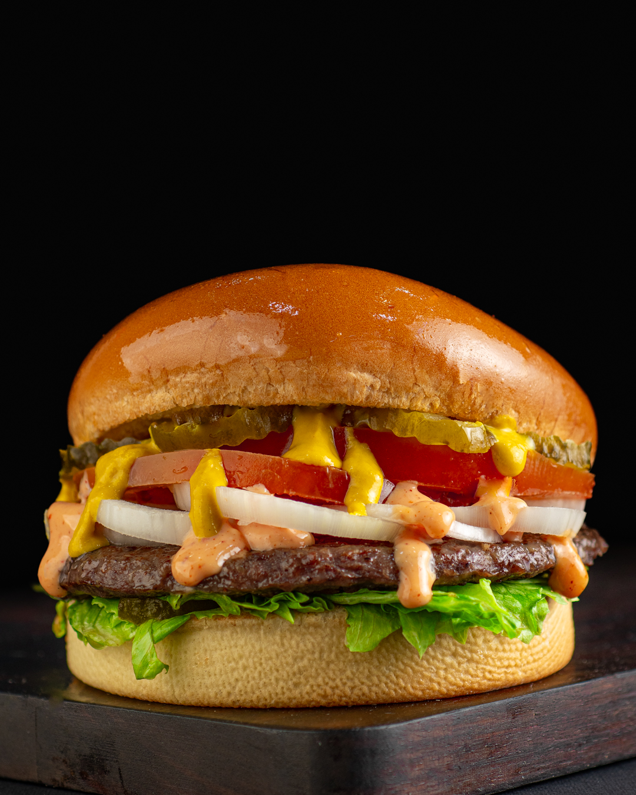
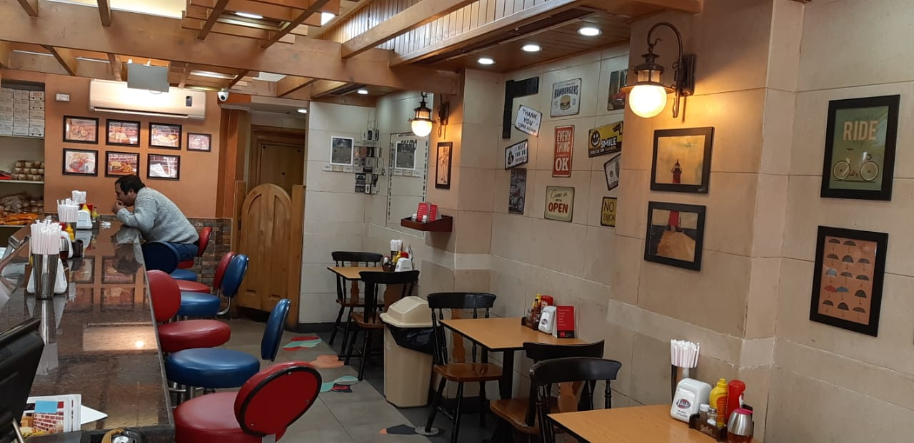
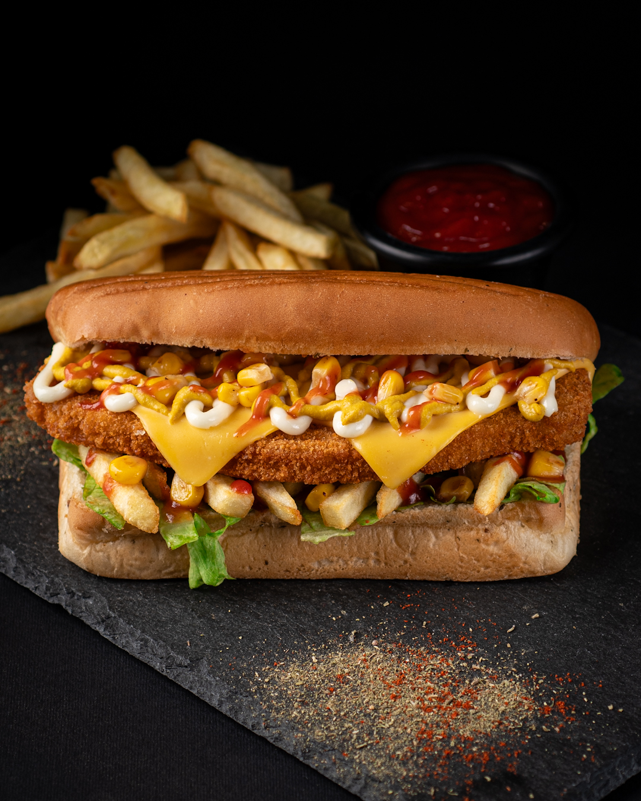
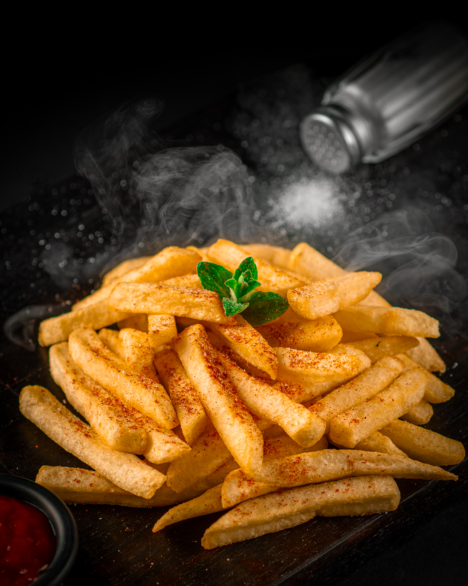

I’ve been eating here for more than 15 years. I grew up with this place. The flavors have never changed, and the quality has stayed consistent throughout the years. I really love this restaurant and its staff.Jad ElSaheb
I used to go there as a child 29 years ago then I left Lebanon and still miss eating at Tolido when I came back many years ago and I tried their food it’s still amazing as before and the owners are sooooo nice.Rasha Abdelbaqi
The best eggs and cheese burger you can eat. The same quality and tatse since the first time i ate it 20 years ago. Chicken sub is great and the bread is very tasty.Ahmad Arakji
| 12–10:45 PM | |
| 12–10:45 PM | |
| 12–10:45 PM | |
| 12–10:45 PM | |
| 12–10:45 PM | |
| 12–10:45 PM | |
| 12:30–10:45 PM |
Afif El Taybi, Beirut, Lebanon
+961 70 696 265